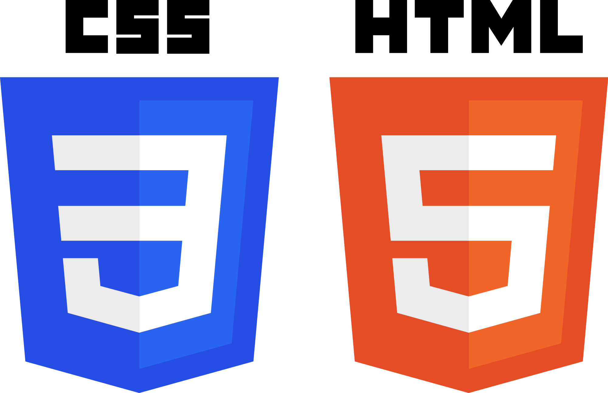
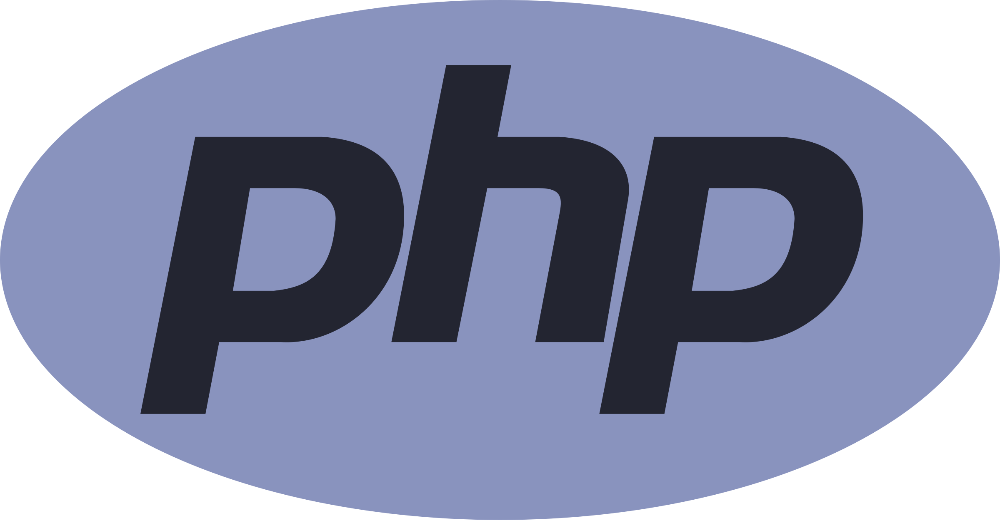
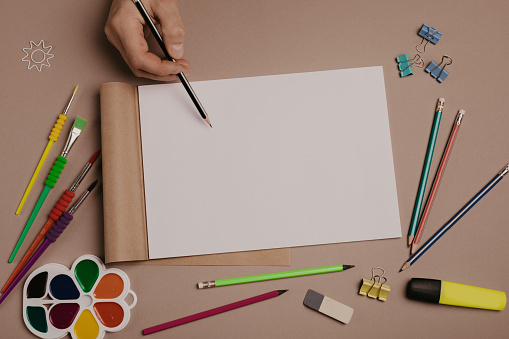
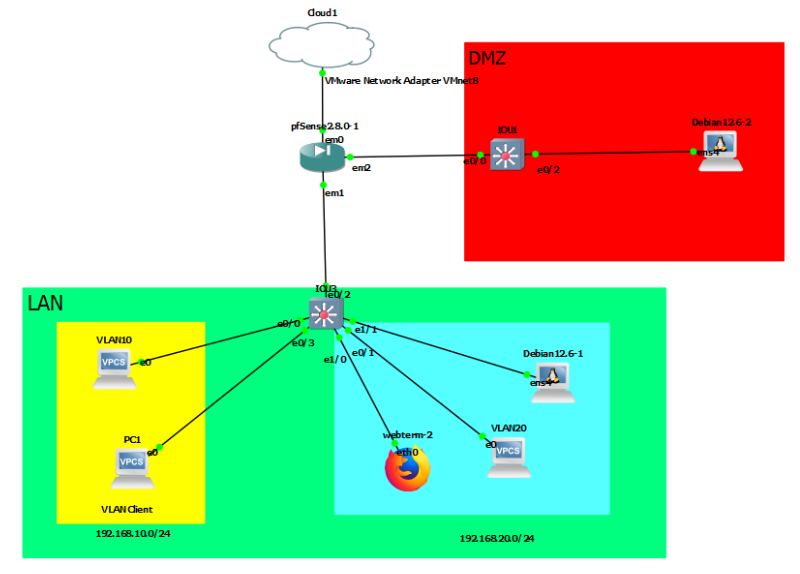

Je m'appelle Jérémy ALLIER et je suis actuellement en première année de bachelor à l'école de GUARDIA cybersécurity. J'ai eu un Bac S en 2018 et un DUT en informatique à l'IUT de Vélizy-Villacoublay en 2021. Je suis passionnée par l'informatique, plus précisément la programmation a l'origine mais après avoir regardé des vidéos et des sites de vilgarisation sur la cybersécurité, j'ai décidé de me spécialisé dans la cybersécurité et plus tard dans le pentest ou dans le reverse.
Compétence





Projets

Logiciel de dessin en C
Au début de mon année a l'IUT, j'ai programmé un logiciel de dessin basic en C avec quelques outils comme la possibilité de faire des traits, ou des rectangles, mais aussi un mode "mains levée" et bien evidemment changement de couleur qui changement aussi la couleur des outils pour que l'on sache toujours quel couleur est utilisé.

Jeu de la vie (Java)
A la fin de ma première année à l'IUT, j'ai pu programmer un logiciel en java basé sur le jeu de la vie en binôme. Ce projet m'a permis de solidifier ma compréhension du java mais aussi de mieux comprendre les langages orientés objet, la conception objet et la sauvegarde de données sur des fichiers de type JSON.

Site web sur les marée
Projet tutoré : développement d’un site d’accès auinformation calendaire des marées du port de Saint-Malo (php, administration des utilisateurs sous sql).

Projet d'infrastructure Réseau
Notre premier projet en première année à l'école Guardia, nous avons dû mettre en place un réseau, tout d'abord simple avec seulement trois équipements (un pare-feu, un serveur DNS/DHCP et un ordinateur client) puis on la complexifié afin de mieux représenter un environnement de travail comme une entreprise ou une école en ajoutant des VLANs dans lesquels on a ajouté d'autres machines, toutes relié à un switch. De plus nous avons ajouté une DMZ afin d'accroître la sécurité du réseau .
Contacter
Vous pouvez me contacter via email ou par téléphone.
Email : jerem.allier@gmail.com
Téléphone : 06 95 51 31 35
© Copyright 2025